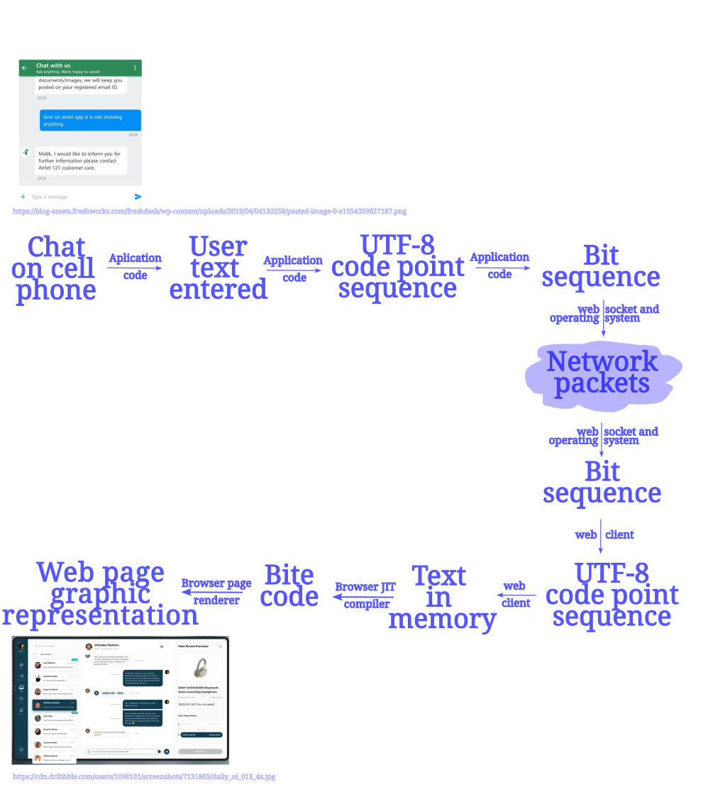
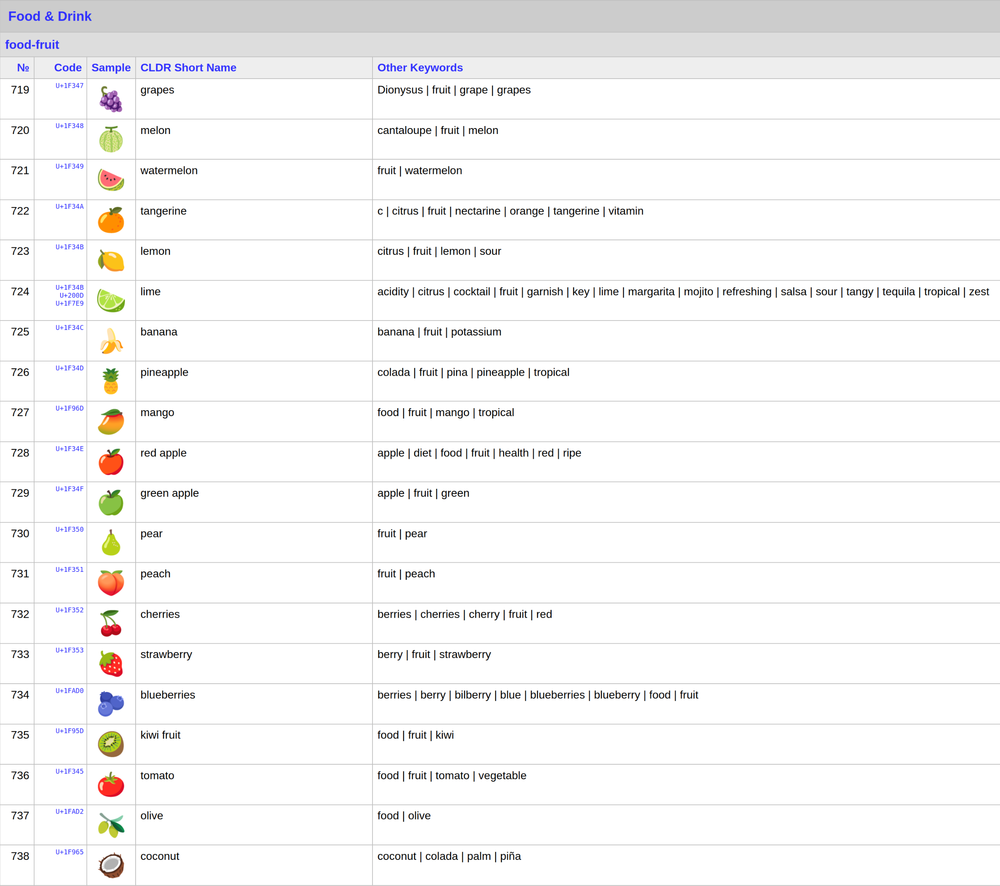

Text is everywhere
Chatbots, web pages, and stand-alone applications display information on the screens of our cell phones, home and office computers, at airports, bus and train stations. The text used in these scenarios enables clear communication. Text is not impeded by sound or obstructed by environmental noise and can deliver impact and meaning through semantically dense symbols reinforced by other visual or aural cues.
Text and written human language are, at their core, technologies developed to build and transmit culture. Accurate textual information is critical in international trade, e-commerce, and customer-facing software. It is safe to say that text has a fundamental role in sustaining our civilization.

What is text anyway?
To narrow the scope of this post to a manageable size, let’s constrain the answer to the world of computer languages. These are used to tell computers what to do when they receive data.
Computer programming starts by writing instructions in a text editor. The characters used to form those instructions were initially called the ASCII characters. These characters conveniently reflected the characters of the English alphabet plus the Arabic numerals and exclamation and punctuation marks.
In this context, text is used for two purposes. One is to write human-readable instructions for a computer to perform a task, the other is to be the data for the instructions to act upon.
How do we use text as code?
The instructions that a computer program are made of have to be interpreted and then transformed into machine-readable code before the machine can execute them. The first step implies parsing the text into functional parts: line breaks, plain data, commands, operators, variable and function names.
The next step is to put those components into an abstract syntax tree (AST) that represents the program. The AST is then further converted into bite code instructions for a run time or into machine instructions to be executed by the operating system scheduler in a process under its supervision, or even directly in to the microchip clock scheduler of a single board computer in the case of real time embedded systems.
The input to and output from the program we call data. Digital computers natively process only zeros and ones. The text, images and sound supplied to a computer must be transformed first into a sequence of these two values.
Text as code is handled relatively well with a small character set. How about the handling of text, images, and sound as data?
Entering text encoding
Restraining myself to write about text only, I am ready to discuss the transformation of what we see as text in our preferred language into bits. A computer program must discern what part of those zeros and ones represent text and put together a message to act on it, whether it is displaying it on a screen, writing to a database, or “launching the missiles”, so to speak. Welcome to text decoding and encoding.
The complexity of this subject arises from the fact that human communication occurs within rich, dynamic, and diverse cultural contexts. Tradition, convention, identity, and art influence the glyphs and alphabets used to articulate words, sentences and, ultimately, ideas in human languages. Furthermore, each written language has rules for what a sentence and a word are, the direction of writing, what punctuation is, etc. It is easy to imagine that text can be as diverse as the human groups that use it.
How do we address this complexity? We use text encoding that machines can understand automatically and unequivocally. The accepted encoding standard is called Unicode. I will quote directly from the Unicode standard definition #51 [1].
Unicode is the foundation for text in all modern software: it’s how all mobile phones, desktops, and other computers represent the text of every language.
A good source of interesting information on Unicode can be found in the web page called the Unicode Primer. Only to give an idea of an interpretation of the 1,112,064 valid Unicode values or code points, have a squinting look at an image at of the Unifont character map. Just for context the ASCII characters fit in less than the first full row on this table.

A font table like the one above is needed to render the Unicode characters or glyphs from their numerical values. There are currently a total of 1,112,064 valid Unicode values or code points. These are scalar values represented in base-16 (using the digits and the letters A to F), their range of values can be seen in Table 1 below. The first 128 code points correspond to the original ASCII and yes you may try to go back to the Unifont table to find them on the first row.
Independent of the artistic design of the font, the Unicode values appear in official tables associated with the typographical or artistic rendition of the glyph they represent. Long before and after they are rendered to a screen or printer, each character is treated as a series of numbers.
The text encodings address the challenge of writing effectively in binary. Text consists of a sequence of characters, usually stored in contiguous memory. The encoding schema must also address the identification of character boundaries when all the program sees is endless zeros and ones.
A Journey from text to bits and back
To illustrate the modern context in which we process text let’s consider a chat application for customer support in a mobile device, see the Figure 2 below. Text is entered on the mobile device through a virtual keyboard, rendered on screen, transformed ultimately into a byte stream with an UTF-8 encoding and sent through the wire/air using Internet protocols. On the receiving end, the bytes of zeros and ones are decoded into UTF-8, further transformed if necessary, interpreted using the indicated language and then displayed on the computer screen of the Browser used by the Customer Support agent to interact with the customer.

Text encoding is a mapping from the code points to some efficient way to write text in binary. A fixed bit width for each character would simplify parsing characters within some text sequence and it would make character boundaries trivial to infer, however, it would waste much space when representing the small ASCII characters. On the other side if we choose a variable bit width then space would be saved with the small values but an end-of-character marker would be required, also adding extra space and complexity.
The common Unicode text encoding to write source code in modern computer languages is called UTF-8, it is the encoding used to store the text of almost the entirety of the web pages of the Internet. UTF stands for the Unicode Transformation Format [2]. This is a super set of the ASCII character set used in the first computer languages like COBOL, FORTRAN and BASIC.
| Range of Code Points | Byte 1 | Byte 2 | Byte 3 | Byte 4 |
|---|---|---|---|---|
| From U+0000 to U007F | 0yyyzzzz | |||
| From U+0080 to U+07FF | 110xxxyy | 10yyzzzz | ||
| From U+0800 to U+FFFF | 1110wwww | 10xxxxyy | 10yyzzzz | |
| From U+010000 to U+10FFFF | 11110uvv | 10vvwwww | 10xxxxyy | 10yyzzzz |
The code values or code points in Table 1 have a corresponding multi-byte representation in UTF-8 form, the encoding has a variable number of bytes. How many bytes is encoded by the number of consecutive ones in the most significant digits of the first byte in a byte sequence: none means the current byte is sufficient to encode the character fully, that is, it fits in one byte, e.g. an ASCII character. One means the byte is part of a multi-byte sequence. Two means the byte marks the start of a character encoded in two bytes in total. Three and four ones mean the equivalent, the byte marks the beginning of characters represented by three and four bytes respectively, including the leading one. Table 2 shows examples of each one of these cases.
| Character | Code point | Byte 1 | Byte 2 | Byte 3 | Byte 4 |
|---|---|---|---|---|---|
| H | U+0048 | 01001000 | |||
| á | U+00E1 | 11000011 | 10100001 | ||
| ᜋ | U+170B | 11100001 | 10011100 | 10001011 | |
| üçá | U+01F347 | 11110000 | 10011111 | 10001101 | 10000111 |
This means that there is no need for escape sequences to mark the boundary of a single encoded multi-byte character. It also mean there is no need of a special marker for characters boundaries in a sequence of many characters. In addition to that it isolates semantic representation from character identification. Unicode encoding takes care of character boundaries but semantic parsing takes care of instruction or operator boundary.
Trade-offs of choosing a Unicode encoding
The code points can be encoded in three forms: UTF-8, UTF-16 and UTF-32. Each encoding maps the code points to unique code unit sequences of variable length [4]. In particular, the larger code points need multiple single code units if using the code form UTF-8. Conversely they may fit into a single code unit if encoded in UTF-32. This happens because the width of the smallest code unit is 8, 16, or 32 bits respectively for each of the forms. See Table 3 below for a comparison of three different encodings for a text sentence using short and long code points.
| Encoding | Hexadecimal |
|---|---|
| UTF-8 | 48 65 6c 6c 6f 20 f0 9f 8d 87 2c 20 f0 9f 8d 88 21 |
| UTF-16 | 0048 0065 006c 006c 006f 0020 d83c df47 002c 0020 d83c df48 0021 |
| UTF-32 | 00000048 00000065 0000006c 0000006c 0000006f 00000020 0001f347 0000002c 00000020 0001f348 00000021 |
The long code points for the fruit emojis occupy a single UTF-32 code unit, look at 0001f347 and 0001f348, üçá and üçà in Table 4 below. from the same table one sees how these long codes require two code units in UTF-16 and four in UTF-8. That means more processing to read and write as more code units are required.
The selection of a encoding form to map code points to code units forces a trade off between space and complexity. UTF-8 is very efficient for handling the smaller Unicode values while it is complex to handle the large ones. Conversely, UTF-32 is wasteful for storing the smaller values but simple for the higher ones.
Windows chose to use UTF-16 natively since the NT version. It is efficient for the Asian alphabets that require at least two code points in UTF-8 but one in UTF-16 for most of their characters.
Consider the following emojis, their Unicode values and their multi-byte representation in three different encodings:
| fruit emoji | name | Unicode point | UTF-8 | UTF-16 | UTF-32 |
|---|---|---|---|---|---|
| üçá | grapes | U+1F347 | f0 9f 8d 87 | d83c udf47 | 0001f347 |
| üçà | melon | U+1F348 | f0 9f 8d 88 | d83c df48 | 0001f348 |
| üçâ | watermelon | U+1F349 | f0 9f 8d 89 | d83c df49 | 0001f349 |
In general, UTF-8 is the most suitable option for web pages and computer programs. The reason is only pragmatic because it makes the web engines and text editors and parsers work well when consuming most html, Javascript, and general purpose computer languages.
The Windows operating system uses APIs that handle the UTF-8 to UTF-16 conversion internally. In that way application code can pass UTF-8 encoded to the operating system.
More definitions
We are not done with definitions yet. Some additional considerations are necessary to process text correctly, for this a detailed reading of the Unicode standard is advised [5]. I will focus first on the difference between characters and glyphs.
A character is an abstract representation of a concrete mark made on paper or rendered to a computer screen, a so-called glyph. The character is the Unicode value that matches a glyph by convention.
The standard defines how to represent and how to identify a text character as a code point, however it does not provide rules for determining what a valid text element is because that depends on what the context is. Examples of context are capitalization for a title in English text, or the brake down of long sequences of characters at the end of text lines.
A text unit, thus is a valid sequence of one or more encoded text characters [5].
Algorithms for text encoding
I will spare the reader with the specifics of these algorithms to go from code point to any of the encodings. A easy to follow example of these algorithms can be found elsewhere, I like the rich examples from this website: utf-8 encode-decode. If you follow those examples you will realize a text processing program needs a table of code points to glyphs, and an algorithm to encode code points to code units and the reversal.
Why does all of this matter?
Text is used in the web and operating systems for any language, even for pseudo-languages like modern emojis. We have come to expect web apps, web sites, and our computers and mobile devices to be able to display our language and emojis correctly.
The programs that process text have to be break it down into its smallest components and then interpreted it as groups of characters that form words and punctuation, whole sentences, and whole paragraphs. And this has to work for any language supported by the software.
I am avoiding the discussion on general rules for displaying numbers, dates, and so on, commonly included in the definition of the locale used by a computer. Keeping the focus exclusively on text, the main technique to process it is called text boundary analysis. In a nutshell, this is about finding where lines can be wrapped for display, where sentences end, how to move a cursor for one word to the next, how to find words and count them, how to move the cursor one character at a time, etc. The ICU has an excellent explanation of it in its page on this subject.
Simple character boundary examples
I will present examples of character boundary identification in different computer languages. We will limit the scope to identifying emoticons mixed in with text for rendering text using UTF-8 encoding as most modern editors and terminals would do.
I will be using emojis from the food-fruit category, as defined in the Unicode standard chart shown in the figure below.

C++
The platform agnostic support for UTF-8 in C++ 20 is not quite as simple as in other modern computer languages. POSIX operating systems like Linux work with UTF-8 out of the box. However Windows uses UTF-16 internally, making every system call dependent on text encoding translations. Thankfully those translations are hidden under Windows API calls.
There is a C/C++ library for handling Unicode from the International Components for Unicode, ICU for short. This organization sits under the same umbrella of Unicode, Inc. The library is old judging by the 25 year-ago commits as of the time of writing. However, it is still maintained and it has been moved to GitHUb where it has a modern CI/CD pipeline. Furthermore the more modern Boost locale library uses the ICU libraries under the hood. These libraries are used by Linux packages everywhere to support internationalization.
In particular there is an ICU project that showcases the applications of the library through web pages for interactive text manipulation. The app for text segmentation is quite interesting. The app is hosted in icusegments-demo. The source code can be found in icu-demos in GitHub.
I found that the pages are quite slow at certain times of day, using them is easier late at night in the North American time zones. Below is a successful test of the target sentence I want to parse by grapheme cluster, what we as users would identify as characters on the screen.
Building the ICU library
The ICU library can be installed in a Ubuntu system either from the upstream repository through the package manager or by getting it from sources, then building and installing it locally. The last option is also available in a Windows operating system. Multiple versions can coexist simultaneously.
After cloning the project from ICU, one can follow the steps in building-icu4c to configure, build and install the version 77.0.1 as of the date of this writing. A minimal working example was then build using CMake. The only caveat is to explicitly link the ICU shared libraries necessary, as an example, using the GNU toolchain on Linux: g++ your_file.cpp -o your_program -licuio -licui18n -licuuc, for a program that needs the libicuio.so, libicui18n.so, and libicuuc.so shared libraries.
The C++ test driver code
As far as the code goes, below is a first attempt at illustrating what analysis we want to do. We want to segment an UTF-8 string with variable width code units that represent a blend of plain English ASCII and some emojis.
int main(int argc, char **argv)
{
std::vector<std::string> fruit;
fruit.push_back("üçá");
fruit.push_back("üçà");
fruit.push_back("üçâ");
fruit.push_back("üçä");
fruit.push_back("üçã");
std::string test_string = fruit[0];
std::string long_fruity_string = "Hello " + test_string + ", " + fruit[1] + "!";
//Note: Since C++17 and ICU 76, you can use UTF-16 string literals with compile-time
// length determination.
const icu::UnicodeString str = icu::UnicodeString::fromUTF8(long_fruity_string);
std::string st;
str.toUTF8String(st);
std::cout << "Sentence to parse: \"" << st << "\"" << std::endl;
UErrorCode err = U_ZERO_ERROR;
std::unique_ptr<icu::BreakIterator> iter(
icu::BreakIterator::createCharacterInstance(icu::Locale::getDefault(), err));
assert(U_SUCCESS(err));
iter->setText(str);
auto start = iter->first();
auto end = start;
std::string charToPrintUTF8{};
auto ctp = icu::UnicodeString{};
while (iter->next() != icu::BreakIterator::DONE) {
start = end; // set start of the current grapheme before a pass throught the loop
end = iter->current(); // update the end position of the current grapheme boundary found via iter->next
auto len = end - start; // in code units containing a grapheme
charToPrintUTF8.clear();
ctp = str.tempSubString(start, len);
ctp.toUTF8String(charToPrintUTF8);
auto grapheme = len<2? std::string{charToPrintUTF8.front()}: charToPrintUTF8;
std::cout << "Code units: " << len << "; grapheme: '" << grapheme << "' of " << charToPrintUTF8.length() << " bytes" << std::endl;
}
return 0;
}The output is shown below when this code is compiled using the GNU compiler g++ 13.3 using the C++17 standard, the ICU libraries version 77.0.1 (built from latest GitHub as of this writing), CMake version 3.28.3 for the build system, and Ubuntu 24.04 for the Linux operating system. The output was edited to remove unnecessary details, linking to the ICU libraries is not a simple job, there is a learning curve to go through. The pay off for this complexity is a lot of control in the output.
$ cmake ../ -DCMAKE_BUILD_TYPE=Debug
-- The C compiler identification is GNU 13.3.0
-- The CXX compiler identification is GNU 13.3.0
...
-- Found the following ICU libraries:
-- data (required): /usr/local/lib/libicudata.so
-- uc (required): /usr/local/lib/libicuuc.so
-- i18n (required): /usr/local/lib/libicui18n.so
-- io (required): /usr/local/lib/libicuio.so
-- Found ICU: /usr/local/include (found suitable version "77.0.1", minimum required is "77.0")
-- Configuring done (0.4s)
-- Generating done (0.0s)
-- Build files have been written to: /home/pablo/git/CPP/character_boundaries/build-debug
Thu Jan 30, 21:48:26; pablo@XPS13:~/git/CPP/character_boundaries/build-debug
$ make
[ 50%] Building CXX object CMakeFiles/cbd.dir/main.cpp.o
[100%] Linking CXX executable cbd
[100%] Built target cbd
Thu Jan 30, 22:58:20; pablo@XPS13:~/git/CPP/character_boundaries/build-debug [main]
$ ./cbd
Sentence to parse: "Hello üçá, üçà!"
Code units: 1; grapheme: 'H' of 1 bytes
Code units: 1; grapheme: 'e' of 1 bytes
Code units: 1; grapheme: 'l' of 1 bytes
Code units: 1; grapheme: 'l' of 1 bytes
Code units: 1; grapheme: 'o' of 1 bytes
Code units: 1; grapheme: ' ' of 1 bytes
Code units: 2; grapheme: 'üçá' of 4 bytes
Code units: 1; grapheme: ',' of 1 bytes
Code units: 1; grapheme: ' ' of 1 bytes
Code units: 2; grapheme: 'üçà' of 4 bytes
Code units: 1; grapheme: '!' of 1 bytesIt is non-trivial to find the character boundaries in C++. The ICU BreakIterator for characters and its functions next() and current() apply rules for grapheme cluster identification based on the locale and the Unicode pages for the glyphs. When UnicodeString object is parsed into these graphemes and an individual one is converted to UTF-8 we observe that the regular letters of the English alphabet, the white space and the punctuation characters use 1 byte, as expected, while the fruit emojis take 4 bytes, also as expected.
The reader is invited to look under the hood to the complexity in the parsing algorithm to identify these grapheme clusters. This kind of software is infrastructure that has to remain hidden so we can communicate using all of our languages and all of the emojis of the world in our devices.
The reader is also invited to look up this Stack Overflow answer on doing exactly the same character segmentation exercise in C++ using the Boost library and its module called locale. It has a more modern interface in terms of function names and paradigm. However, as I mentioned earlier, it relies on the ICU libraries to do the detailed work. I like it that it uses the term boost::locale::boundary::character as the function to map over an UTF-8 string using an object of type boost::locale::boundary::csegment_index. It is all in the naming!
A caveat though, to be able to use Boost locale and the ICU libraries in the same executable their versions must match. The default Ubuntu 24.04 system Boost (v1.83) and ICU libraries (v74) did not match out out of the box because the Boost locale v1.83 was built with ICU v77. There is enough material for a full post on that subject alone.
Rust
In Rust I used the crate emojis from the official public registry. A crate is a module in Rust. For more details consult the free cargo online book.
The code creates a short vector with the first 5 elements of the Unicode emojis in the Food and Drink group. Then it creates a Rust String by concatenating String slices in UTF-8. It follows by using the magic of the String function chars to find the character boundaries and to print them one by one. The ‘magic’ comes from the fact that some of these characters have multiple code unit representations in UTF-8, the default this is the Unicode form used by the Rust String data type, regardless of the operating system.
In other words the function has to parse the byte sequence and using the UTF-8 decoding rules find whole characters, using the rules shown in Table 1. Once the base 16 Unicode code points are found a rendering function has to find them in a table and create the matching glyph on the terminal for printing.
Finally, the binary sequence for the whole sentence is printed to the terminal.
extern crate emojis;
fn main() {
let fruit: Vec<_> = emojis::Group::FoodAndDrink.emojis().map(|e| e.as_str()).take(5).collect();
assert_eq!(fruit, ["üçá", "üçà", "üçâ", "üçä", "üçã"]);
let test_string = String::from(fruit[0]);
let long_fruity_string = "Hello ".to_owned() + &test_string + ", " + fruit[1] + "!";
println!("\"{}\"", long_fruity_string);
for letter in long_fruity_string.chars() {
println!("{letter}");
}
let mut long_fruity_string_in_binary = "".to_string();
for character in long_fruity_string.clone().into_bytes() {
long_fruity_string_in_binary += &format!("0{:b} ", character);
}
println!(r#""{}" in binary is "{}""#, long_fruity_string, long_fruity_string_in_binary);
}The output:
$ cargo run
Compiling character_boundary v0.1.0 (/home/pablo/git/Rust/rust-practice/character_boundary)
Finished `dev` profile [unoptimized + debuginfo] target(s) in 0.41s
Running `target/debug/character_boundary`
"Hello üçá, üçà!"
H
e
l
l
o
üçá
,
üçà
!
"Hello üçá, üçà!" in binary is "01001000 01100101 01101100 01101100 01101111 0100000 011110000 010011111 010001101 010000111 0101100 0100000 011110000 010011111 010001101 010001000 0100001 "Remember the rules for representing UTF-8 encoded bytes from standard Unicode points? Here are the first four of the last five bytes of the sentence: 11110000 10011111 10001101 10001000, after removing the initial 0 that indicates binary numbers. Observe that these correspond to the 4 bytes of the multi-byte encoded character for the melon emoji: üçà, with Unicode value U+1F348, and with value in UTF-8 encoding in hexadecimal as f0 9f 8d 88 (from Table 3).
Python
Pyhton 3 was a re-write of Python 2 in great part to make the language Unicode aware, therefore it is no surprise that it is one the most straight forward codes for our character boundary discovery exercise.
#!/usr/bin/env python3
def print_each_grapheme( unicode_string: str):
"""
prints each unicode grapheme cluster
"""
[print(c) for c in unicode_string]
if __name__ =="__main__":
"""
runs the script when called as a stand alone
"""
fruits = u"üçáüçàüçâüçäüçã"
test_string = fruits[0]
long_fruity_string = "Hello " + test_string + ", " + fruits[1] +"!"
print_each_grapheme(long_fruity_string)Python 3 extends the concept of a string to an array of Unicode grapheme clusters. This facilitates character boundary identification using the idiomatic list comprehension syntax and a string iterator. Under the hood the iterator is using Unicode code pages. The output is as expected.
$ ./main.py
H
e
l
l
o
üçá
,
üçà
!R
R has the emoji package. After a short exploration of its manual [7] it is possible to print the characters of a sentence using the fruit emojis by identifying their boundaries boundaries seamlessly.
install.packages("emoji")
library("emoji")
fruit <- emojis[ emojis$name %in% c("grapes", "watermelon", "melon", "lemon", "tangerine"),]$emoji
test_string <- fruit[1]
long_fruity_string <- paste("Hello ", test_string,", ",fruit[2], "!" )
paste(long_fruity_string)
results <- strsplit(x = long_fruity_string, split = "")
#'strsplit' returns a list in case x has multiple strings to be processed, we grab only the first one
results[[1]]Produces the following output, a vector of characters, due to R’s native focus on vectorized operations:
[1] "Hello üçá , üçà !"
[1] "H" "e" "l" "l" "o" " " " " "üçá" " " "," " " " " "üçà" " " "!"Character boundary identification complexity
One might be tempted to think that character boundary is always a simple task. By simple I mean, decode the bytes into Unicode code points, look them up in tables, render each. However some languages have special symbols to compose the individual glyphs into sentences, these have to be identified and decomposed. To illustrate this look at the python and Rust examples below.
The text comes from this Stack Overflow question cross-platform-iteration-of-unicode-string-counting-graphemes-using-icu
#!/usr/bin/env python3
from main import print_each_grapheme
if __name__ == "__main__":
test_word = "नमस्ते"
print_each_grapheme(test_word)The output is correct because the two combining marks are discovered correctly.
Rust does likewise:
extern crate emojis;
fn main() {
let tets_word = "नमस्ते";
println!("\"{}\"", tets_word);
for letter in tets_word.chars() {
println!("{letter}");
}
}Conclusion
Text representation using Unicode values and encondings has become an invisible technical detail. Its standardization, maintenance, and enhancement is in the hands of a few experts, interest groups and users that drive their constant adaptation to modern communication via the web.
Of the computer languages tested, Rust, Python, and R have a rich supply of modules for accessing Unicode glyphs by subject, and also for parsing and rendering functions that apply the Unicode standards. The ICU libraries in C++ have a more nuanced API. Boost C++ has put a more modern API to the ICU libraries but it takes developer effort to become productive quickly.
The needs of the world have evolved in the last decades towards more internationalization through the Internet, global supply chain, and international e-commerce and trade. Rust and Python 3 have been developed in the last 15 years and their developer experience reflects their conscious decision to treat Unicode as a first class citizen and become popular languages for modern application development. Java was not tested here.
All the software we use handles text encodings, most likely UTF-8 or UTF-16 like Windows does, via the libraries of the computer languages or the operating system. We saw examples of how well they do it for the simplest of operations. I hope this has given the reader a feel for the size of the task when it comes to writing software that processes text as data in diverse languages. From human readable representation to binary data that can travel through wires, optic fibre, or electromagnetic waves, text is everywhere and it is not going away any time soon.